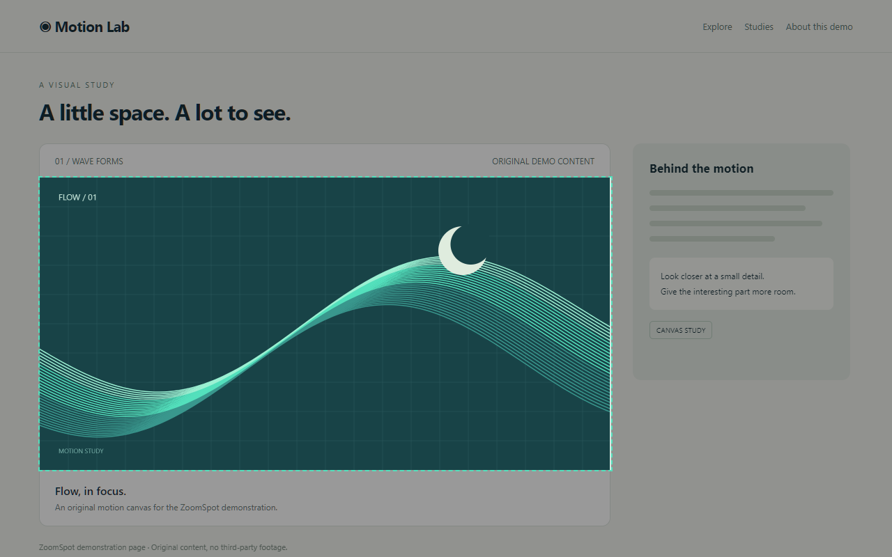
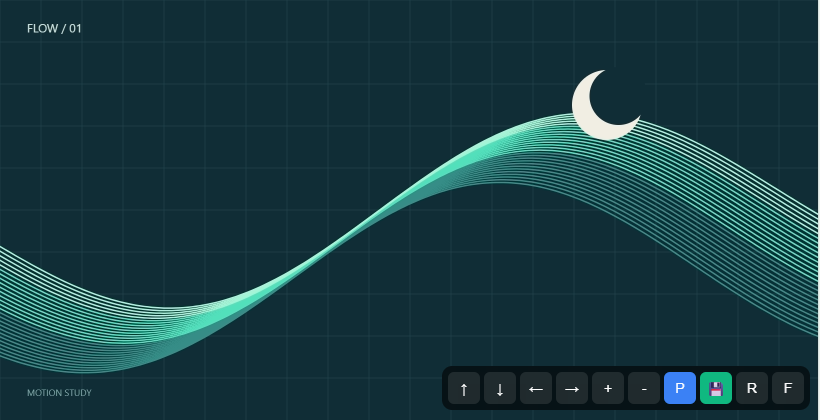
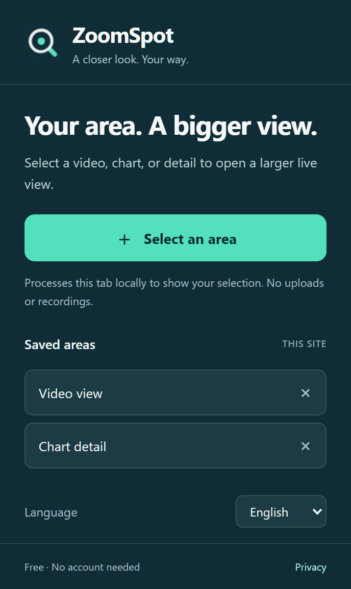

01
Select an area
Click ZoomSpot and drag around the part you want. Selection starts only after your action.
Free Chrome extension
Select a video, chart, or small detail and see it in a larger live view — without losing the original page.
Chrome 116+ · No account needed · v1.3.0


Small area. Clear focus.
ZoomSpot visually isolates the part you choose and keeps it live in its own window. It is ideal for videos, lessons, charts, dashboards, and details that disappear inside a busy page.
Three simple steps
Click ZoomSpot and drag around the part you want. Selection starts only after your action.
Resize the window, move the crop, adjust zoom, or switch to fullscreen and Picture-in-Picture.
Name an area and open it again on the same website. Settings remain local to your Chrome profile.

Made for everyday use
Open different areas from the same tab and keep them active at the same time.
Keep the selected area above other windows whenever you need a constant reference.
Move with the arrow keys, adjust zoom with +/−, and restore the original selection with R.
Saved areas appear only on the website where you created them.
Private by design
ZoomSpot has no accounts, application server, advertising, or analytics. Frames are used transiently for the live view, and no video or screenshot file is created.
Useful details
On ordinary websites in desktop Chrome 116 or newer. Chrome internal pages and other restricted pages do not allow extension access.
Yes. The view is live and comes from the source tab, so that page needs to remain open.
No. Audio remains with the source page and is not captured by ZoomSpot.
Some DRM-protected content may remain black because Chrome prevents it from being captured.
ZoomSpot for Chrome
Select. Enlarge. Focus.